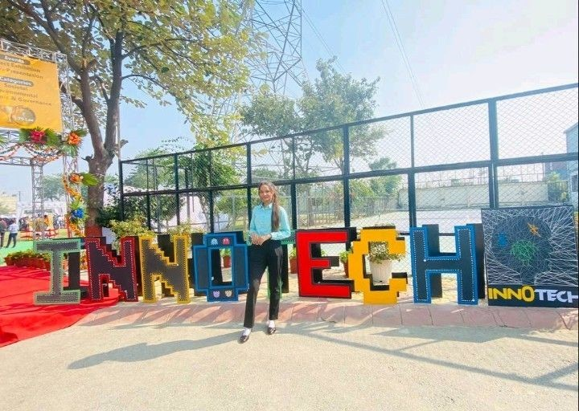

About KIET: Open KIET Website
About AKTU: Open AKTU Website
About MCA Department: Open MCA Department
Bottom: Move to bottom side of the page
About Myself: MySelf
My city: About MyCity
MY Motive: About MY motive
Top: Top
About Myself:
I am SHIVANI SHARMA, I'm from Modinagar Ghaziabad and my Qualifications are:
- Educational Qualification
- Secondary from Modern Academy Sr. Sec. School (CBSE ) Board in 2017 with 10.0 cgpa.
- Higher Secondary from Modern Academy Sr. Sec. School (CBSE ) Board in 2019 with 85%.
- BCA From Dr.KN MIET ( CCSU ) in 2022.
- Now, I'm Persuing MCA from KIET Group Of Institutions, affiliated by AKTU University
- Technical skills
- Programming: C/C++, Java
- Web Technology: CSS, HTML, Bootstrap
- Achievements
- Gold badge in C at Hackerrank
- Three stars in java at Hackerrank
- Three Stars in C++ at HAckerrank
- Project on Online Shopping and Payroll Management System
- Certification in Java by Infosys Springboard
- Strength
- Web Development
- Project Management
- Computer Networking
- Problem Solving
- Hobbies
- Developing Websites
- Exploring world
About City:

Modinagaris a town and a municipal board in Ghaziabad district in the Indian state of Uttar Pradesh. It's just 24 km from Ghaziabad city, 48 km from New Delhi. It is a part of National Capital Region. The city was founded in 1933 by Rai Bahadur Gujar Mal Modi who established the Modi Group of Industries here along with his brother, Kedar Nath Modi. It is approximately 45 kilometres north-east of New Delhi. It is situated on Ghaziabad Meerut National Highway No. 58, approximately equally distant from Meerut and Ghaziabad. It is best known as the home of business conglomerate Modi Enterprises. In recent years, Modinagar has been developed as an educational hub as many new institutions are being established in and around the city due to its location in National Capital Region. Modinagar is also a part of Delhi–Meerut Regional Rapid Transit System. It is connected to recently constructed Delhi - Meerut Expressway (NE-3) via Bhojpur exit.
MY Motive:
My motive is to become software developer.Seeking position to utilize my skills and abilities in the Information Technology industry that offer professional growth while being resourceful, innovative and flexible. Sound knowledge in C/C++, Java, HTML, CSS, Bootstrap. Eager to contribute to all phases of the developmental cycle.